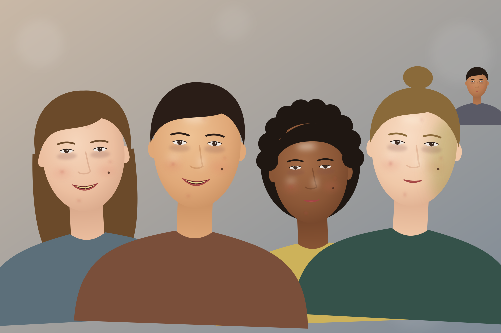

The panel is 400 px wide, as in the app. Faces are drawings made for this folder, not photographs.

1 face
Paint over moles, freckles and scars you want to keep.
4 faces
Paint over moles, freckles and scars you want to keep.
4 faces
Paint over moles, freckles and scars you want to keep.
12 faces
Paint over moles, freckles and scars you want to keep.
No faces found
No faces found in this photo.
Face Refinement works on faces that are at least 200 px across and turned towards the camera. Try another photo, or delete this node. It changes nothing until it finds a face.
Finding faces
Finding faces…
The first time takes a few seconds. The photo stays as it is until then.
5 faces
This face is too small to retouch. Faces need to be at least 200 px across in the full photo.
Paint over moles, freckles and scars you want to keep.
1 face
Paint over moles, freckles and scars you want to keep.